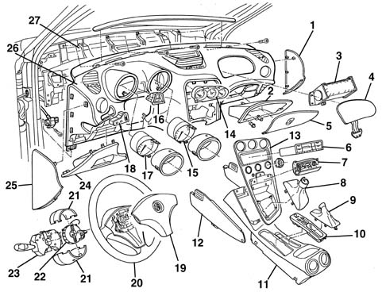

Introduction - BODYSHELL INTERIOR TRIMS AND FITTINGS
- Path
- Descriptions > 70 FITTINGS > 7040 BODYSHELL INTERIOR TRIMS AND FITTINGS > Introduction - BODYSHELL INTERIOR TRIMS AND FITTINGS
- Kind
- system description
- Applies to
- all engines; all production periods
- Interactive page
- https://sloeber94.github.io/elrnDB-a156/en/#/3239242
Applies to: all engines; all production periods
GLOSSARY
Magnesium
A metal which is exceptionally light, in relation to its volume (density 1.74 g/cm3) , and has excellent strength properties. It is used in mechanical constructions in the form of alloys of various types (parts may be cast or forged).
Passive safety
This is the collection of measures which interact to reduce the consequences to the occupants of the vehicle after an accident. The following come into this category: the laminated windscreen, the collapsible steering column, the door opening cables, the material from which the steering wheel is made, the absence of dangerous projections and corners in the dashboard, the structure of the pedals, the shape and resistance of the seats, the head restraints, the seat belts (also with pre-tensioners), the air bags and the bodyshell with differentiated resistance, in other words the passenger survival cell which is as rigid as possible and the front and rear sections, on the other hand, with crumple zones designed to gradually absorb the energy of the impact.
FACIA
The facia is a single-pieced structure fixed to a magnesium alloy (*) supporting crossmember.
The various components are then secured to the basic structure.
The one-piece facia is secured to ana aluminium alloy crossmember which, in turn, is secured to the bodyshell.
The design of the facia and its surrounds is aimed at producing a high level of comfort combined with the search for a high degree of passive safety. In effect, all the projections which, in the case of an accident could have proved "aggressive" in terms of the occupants of the vehicle, have been eliminated.
The passenger Air Bag module is housed underneath the facia, protected by a special cover fixed with yield type bolts.

1, Right side trim 2, Glove compartment 3, Passenger air bag module 4, Passenger air bag cover 5, Compartment flap 6, Car radio 7, Ashtray/cigar lighter 8, Gear lever gaiter 9, Handbrake lever gaiter 10, Switch panel 11, Trim on tunnel 12, Side covers 13, Trim beneath facia 14, Combined analogue control panel 15, Rev counter 16, Fault display 17, Speedometer/mileometer 18, Headlamp alignment control switch 19, Driver's Air Bag module 20, Steering wheel 21, Steering column covers 22, Clock spring 23, Steering column switch unit 24, Fuse access cover 25, Left facia trim 26, Facia trim 27, Supporting crossmember
TRIM
The trims used, in addition to the high standard which stems from the choice of materials and their working, satisfy the international standards governing flammability. In effect, they do not ignite if they come into brief contact with a flame (for example, if a cigarette is dropped), flames do not develop and, in the presence of fierce heat their combustion produces strong, dense smoke, limiting the spread of the flames.